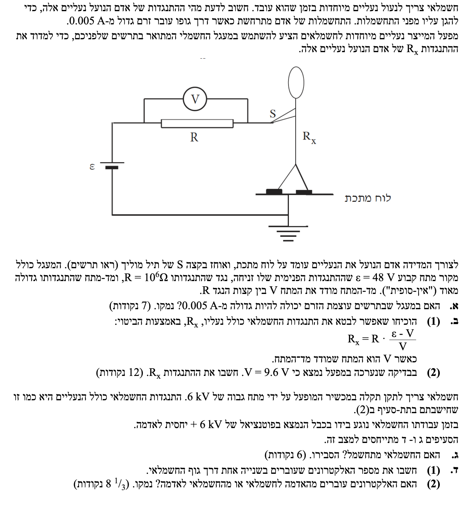

תלמידים יקרים, לפנינו שאלה העוסקת במעגל חשמלי, התנגדות חשמלית, חוק אוהם, ובטיחות בחשמל. בואו נפתור שלב אחר שלב ביסודיות!

[תמונת השאלה המקורית]לא נמצאה תמונה בשם question-image.png באותה תיקייה.
סעיף א': הזרם המקסימלי במעגל
מה נתון:
מקור מתח אידאלי: \( \varepsilon = 48 \text{ V} \) (התנגדות פנימית זניחה \( r = 0 \)).
התנגדות הנגד: \( R = 10^6 \ \Omega \).
זרם מסוכן לאדם: כל זרם הגדול מ- \( 0.005 \text{ A} \).
מד מתח אידאלי שמודד את המתח על הנגד (התנגדותו אינסופית, ולכן לא זורם דרכו זרם).
מה מחפשים:
האם קיימת אפשרות שבה הזרם במעגל המתואר בתרשים יהיה גדול מ- \( 0.005 \text{ A} \)? לשם כך, נחשב מהו הזרם המקסימלי האפשרי במעגל.
נוסחאות ועקרונות בשימוש: \( \Sigma \varepsilon = \Sigma I R \)(חוק המתחים של קירכהוף ללולאה סגורה, ממנו נובע חוק אוהם למעגל השלם: \( I = \frac{\varepsilon}{R_T} \)). \( R_T = \Sigma R_i \)(התנגדות שקולה של נגדים המחוברים בטור).
הצבה ופתרון:
המעגל שלנו הוא מעגל טורי המורכב ממקור המתח \( \varepsilon \), הנגד \( R \), והאדם יחד עם נעליו שמהווים נגד שהתנגדותו \( R_x \). לכן ההתנגדות הכוללת של המעגל היא \( R_T = R + R_x \).
לפי חוק אוהם למעגל, הזרם שזורם דרך האדם שווה ל:
\[ I = \frac{\varepsilon}{R + R_x} \]
כדי לקבל את הזרם המקסימלי ביותר האפשרי, עלינו להקטין את המכנה למינימום. המינימום האפשרי עבור התנגדות האדם והנעליים הוא \( R_x = 0 \).
נציב מצב קיצון זה כדי לחשב את זרם המקסימום:
כלומר, הזרם החזק ביותר שאי פעם יכול לזרום במעגל הזה, קטן משמעותית מסף הסכנה.
לא, עוצמת הזרם לא יכולה להיות גדולה מ- \( 0.005 \text{ A} \). הזרם המקסימלי האפשרי במעגל זה הוא \( 0.000048 \text{ A} \).
טיפ מורה 💡:
בשאלות של "האם ייתכן ש...", כדאי תמיד לבדוק את מקרי הקיצון. אם אפילו במצב החמור ביותר (התנגדות אפסית של המשתמש והנעליים) הזרם עדיין בטוח, הרי שהמערכת בטוחה לחלוטין מזרם יתר.
סעיף ב'(1): הוכחת ביטוי להתנגדות החשמלאי עם הנעליים
מה נתון:
מד המתח מראה קריאה של \( V \) וולט, שמייצגת את המתח בין קצות הנגד \( R \). המעגל מחובר בטור.
מה מחפשים:
להוכיח באמצעות ביטויים אלגבריים כי התנגדות האדם והנעליים היא: \( R_x = R \cdot \frac{\varepsilon - V}{V} \).
נוסחאות ועקרונות בשימוש: \( \Sigma \varepsilon = \Sigma I R \)(סכום מפלי המתח במעגל טורי שווה לכא"מ הכולל: \( \varepsilon = V_R + V_x \)). \( V = R \cdot I \)(חוק אוהם עבור רכיב בודד).
הצבה ופתרון:
מכיוון שהנגד \( R \) והאדם \( R_x \) מחוברים בטור, עובר דרכם אותו זרם \( I \).
מד המתח מודד את המתח על הנגד \( R \), שנסמנו כ- \( V \). לפי חוק אוהם:
\[ I = \frac{V}{R} \]
סכום המתחים על הרכיבים בטור שווה למתח המקור \( \varepsilon \) (כיוון שההתנגדות הפנימית היא אפס). לכן, המתח על האדם, שנסמנו \( V_x \), יהיה:
\[ V_x = \varepsilon - V \]
נפעיל שוב את חוק אוהם, הפעם על האדם עצמו:
\[ V_x = I \cdot R_x \]
נציב את הביטוי של \( V_x \) ואת הביטוי של הזרם \( I \) לתוך המשוואה:
טיפ מורה לקראת הבגרות 💡:
בשאלות "הראה כי" או "הוכח ביטוי", קל מאוד ללכת לאיבוד בתוך האלגברה. הכלל החשוב ביותר בבגרות למעגלי זרם הוא לבנות קודם כל את ה"שלד" הפיזיקלי: רשמו בצורה מסודרת את משוואות הבסיס הרלוונטיות (לדוגמה: במעגל טורי הזרם זהה, וסכום המתחים על הרכיבים שווה למתח המקור). רק לאחר שוודאתם שהפיזיקה נכונה על הדף - עברו למניפולציה המתמטית לבידוד הנעלם המבוקש. הצגת דרך מובנית מבטיחה שתקבלו את מירב הנקודות על ההבנה הפיזיקלית גם אם תטעו באלגברה!
סעיף ב'(2): חישוב התנגדות החשמלאי עם הנעליים
מה נתון:
קריאת מד המתח: \( V = 9.6 \text{ V} \).
כא"מ המקור: \( \varepsilon = 48 \text{ V} \).
התנגדות הנגד: \( R = 10^6 \ \Omega \).
מה מחפשים:
למצוא את הערך המספרי של \( R_x \) בהתבסס על הביטוי שהוכחנו בסעיף הקודם.
נוסחאות ועקרונות בשימוש:
הביטוי שהוכח בסעיף ב'(1).
הצבה ופתרון:
נציב את כל הנתונים ישירות אל תוך הנוסחה:
\[ R_x = 10^6 \cdot \frac{48 - 9.6}{9.6} \]
נחשב את ערך המונה:
\[ R_x = 10^6 \cdot \frac{38.4}{9.6} \]
נבצע את החלוקה בשבר:
\[ R_x = 10^6 \cdot 4 = 4 \cdot 10^6 \ \Omega \]
ההתנגדות של האדם הכוללת את נעליו היא \( R_x = 4 \cdot 10^6 \ \Omega \).
סעיף ג': התחשמלות בעבודה
מה נתון:
מתח הכבל שהחשמלאי נוגע בו: \( V_{new} = 6 \text{ kV} \).
התנגדות החשמלאי: \( R_x = 4 \cdot 10^6 \ \Omega \).
סף סכנת התחשמלות: כאשר הזרם גדול מ- \( 0.005 \text{ A} \). המרה (MKS): עלינו להמיר מ-קילו וולט לוולט. לפי דף הנוסחאות הקידומת 'k' (קילו) שווה ל- \( 10^3 \). לכן: \( V_{new} = 6000 \text{ V} \).
מה מחפשים:
לבדוק האם הזרם שיעבור דרך החשמלאי במקרה זה יהיה גדול מ- \( 0.005 \text{ A} \) כדי לקבוע האם יתחשמל.
נוסחאות ועקרונות בשימוש: \( V = R \cdot I \)(חוק אוהם - נמצא את הזרם: \( I = \frac{V}{R} \)).
הצבה ופתרון:
במקרה של נגיעה בכבל מתוח של \( 6000 \text{ V} \), כאשר החשמלאי עומד על האדמה (שהפוטנציאל שלה מוגדר כאפס), מתח המקור הפועל עליו הוא בדיוק \( 6000 \text{ V} \).
נחשב את הזרם שיעבור בגופו לפי חוק אוהם:
\[ I = \frac{6000}{4 \cdot 10^6} \]
\[ I = 1.5 \cdot 10^{-3} \text{ A} \]
\[ I = 0.0015 \text{ A} \]
כעת, נשווה את הזרם המחושב לזרם המסוכן:
\[ 0.0015 \text{ A} < 0.005 \text{ A} \]
הזרם שעובר דרכו קטן מסף הסכנה.
החשמלאי לא יתחשמל, מכיוון שהזרם שיעבור דרכו (\( 0.0015 \text{ A} \)) קטן מהזרם המסוכן (\( 0.005 \text{ A} \)).
רגע של לימוד - הארקה ונקודת ייחוס 🌍:
בתרשים המעגל מופיע סימן של קווים אופקיים הולכים ומתקצרים
. זהו סימן ההארקה!
כשאנחנו רואים את הסימן הזה, אנו מבינים שזוהי נקודת הייחוס במעגל, אשר מוגדרת עם פוטנציאל של \( V = 0 \text{ V} \). חשוב מאוד להבין: ההארקה אינה משנה את כא"מ המקור או את המתחים (שהם בעצם הפרשי פוטנציאלים) בין חלקי המעגל. היא רק קובעת עבורנו איפה נמצא ה"אפס".
אנלוגיה לאנרגיית גובה: בדומה לאנרגיה פוטנציאלית כובדית במכניקה (\( E_p = mgh \)), שבה אנו רשאים לבחור היכן נמצאת הקרקע או הרצפה (\( h=0 \)), כך גם בחשמל - ההפרשים נשארים זהים, וההארקה פשוט משמשת כ"רצפה" החשמלית שלנו שממנה אנו מודדים את הפוטנציאל בכל נקודה אחרת במעגל.
סעיף ד'(1): מספר האלקטרונים
מה נתון:
זרם העובר דרך גוף החשמלאי: \( I = 0.0015 \text{ A} \).
פרק זמן: שנייה אחת, \( t = 1 \text{ s} \).
מטען חשמלי יסודי (מתוך קבועים בסיסיים בדף הנוסחאות): \( e = 1.6 \cdot 10^{-19} \text{ C} \).
מה מחפשים:
את המספר הכולל של אלקטרונים (\( N \)) העוברים דרך גוף החשמלאי בשנייה אחת.
נוסחאות ועקרונות בשימוש: \( i = \frac{dq}{dt} \)(זרם מוגדר כקצב זרימת מטען: \( I = \frac{\Delta q}{\Delta t} \) ומכאן \( \Delta q = I \cdot \Delta t \)). עיקרון קוונטיזציית המטען: המטען הכולל הוא כפולה שלמה של מטען אלקטרון בודד:\( \Delta q = N \cdot e \).
הצבה ופתרון:
תחילה נמצא את סך המטען \( \Delta q \) שעבר בשנייה אחת:
כעת, כדי למצוא כמה אלקטרונים מרכיבים את המטען הזה, נחלק את המטען הכולל במטען של אלקטרון בודד:
\[ N = \frac{\Delta q}{e} = \frac{0.0015}{1.6 \cdot 10^{-19}} \]
\[ N = 9.375 \cdot 10^{15} \]
כפי שסיכמנו, נציג את התוצאה הסופית המעוגלת ל-3 ספרות מהותיות.
מספר האלקטרונים העוברים דרך גוף החשמלאי בשנייה אחת הוא \( N = 9.38 \cdot 10^{15} \) אלקטרונים.
סעיף ד'(2): כיוון תנועת האלקטרונים
מה נתון:
פוטנציאל הכבל: \( V_{cable} = +6000 \text{ V} \).
פוטנציאל האדמה (ייחוס): \( V_{ground} = 0 \text{ V} \).
לאלקטרונים יש מטען חשמלי שלילי.
מה מחפשים:
לקבוע האם האלקטרונים נעים מהאדמה אל החשמלאי, או מהחשמלאי אל האדמה, ולהסביר מדוע.
נוסחאות ועקרונות בשימוש: השדה החשמלי מכוון תמיד מפוטנציאל גבוה לפוטנציאל נמוך. \( \vec{F} = q\vec{E} \)כוח חשמלי הפועל על מטען בשדה. אם המטען \( q \) שלילי, הכוח פועל בכיוון המנוגד לכיוון השדה החשמלי.
הצבה ופתרון:
1. כיוון השדה החשמלי: מכיוון שהכבל נמצא בפוטנציאל גבוה (\( +6000 \text{ V} \)) והאדמה בפוטנציאל נמוך (\( 0 \text{ V} \)), השדה החשמלי מכוון מלמעלה למטה, כלומר מהכבל אל האדמה.
2. כוח על האלקטרונים: אלקטרונים הם בעלי מטען שלילי. לכן, הכוח החשמלי שפועל עליהם הוא נגד כיוון השדה החשמלי.
כתוצאה מכך, האלקטרונים נדחפים בניגוד לכיוון השדה, מהפוטנציאל הנמוך לפוטנציאל הגבוה.
האלקטרונים עוברים מהאדמה לחשמלאי. (מהפוטנציאל הנמוך באדמה, מעלה דרך גוף החשמלאי, לכיוון הפוטנציאל הגבוה של הכבל).
טיפ מורה 💡:
חשוב להבדיל בין ה"זרם הקונבנציונלי" לבין זרימת האלקטרונים בפועל! לפי המוסכמה, זרם \( I \) תמיד זורם מהפלוס למינוס (מפוטנציאל גבוה לנמוך), אך בפועל בחוטי מתכת מי שזז הם האלקטרונים השליליים, והם נעים בדיוק בכיוון ההפוך (מהמינוס לפלוס).
נוסח השאלה המקורית
[תמונת השאלה המקורית]לא נמצאה תמונה בשם question-image.png.